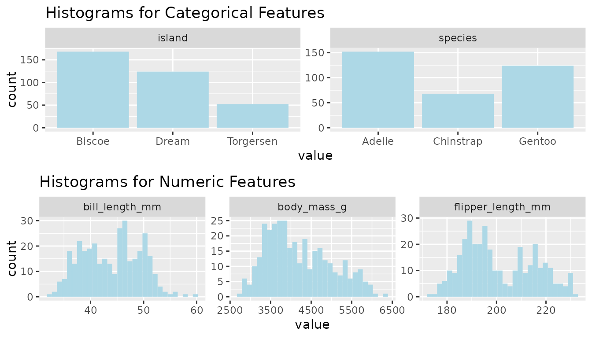
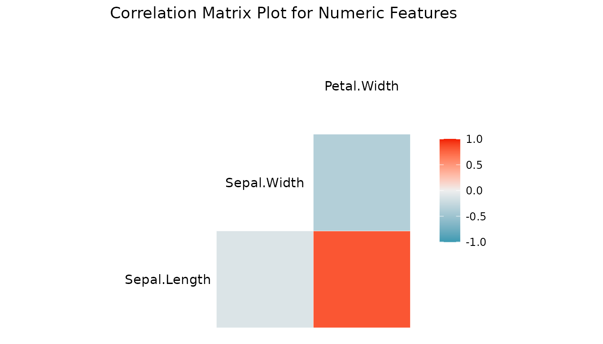
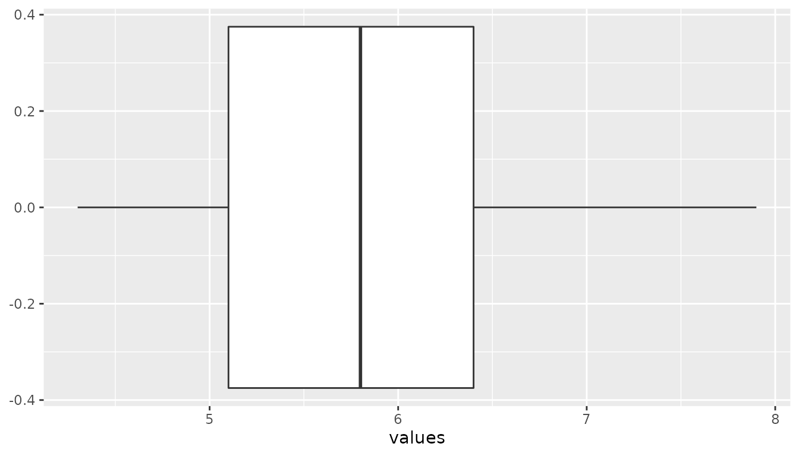

How to use snapedautilityR
Kyle Ahn, Dongxiao Li, Harry Chan
my-vignette.RmdsnapedautilityR an open-source library that generate useful function to kickstart EDA (Exploratory Data Analysis) with just a few lines of code. The system is built around quickly analyzing the whole dataset and providing a detailed report with visualization. Its goal is to help quick analysis of feature characteristics, detecting outliers from the observations and other such data characterization tasks.
Import library
Here we will demonstrate how to use snapedautilityR package for your data science project.
library(snapedautilityR)Sample data
We will be using the penguins data and iris data here.
library(palmerpenguins)
head(penguins)
#> # A tibble: 6 × 8
#> species island bill_length_mm bill_depth_mm flipper_length_… body_mass_g sex
#> <fct> <fct> <dbl> <dbl> <int> <int> <fct>
#> 1 Adelie Torge… 39.1 18.7 181 3750 male
#> 2 Adelie Torge… 39.5 17.4 186 3800 fema…
#> 3 Adelie Torge… 40.3 18 195 3250 fema…
#> 4 Adelie Torge… NA NA NA NA NA
#> 5 Adelie Torge… 36.7 19.3 193 3450 fema…
#> 6 Adelie Torge… 39.3 20.6 190 3650 male
#> # … with 1 more variable: year <int>
head(iris)
#> Sepal.Length Sepal.Width Petal.Length Petal.Width Species
#> 1 5.1 3.5 1.4 0.2 setosa
#> 2 4.9 3.0 1.4 0.2 setosa
#> 3 4.7 3.2 1.3 0.2 setosa
#> 4 4.6 3.1 1.5 0.2 setosa
#> 5 5.0 3.6 1.4 0.2 setosa
#> 6 5.4 3.9 1.7 0.4 setosaPlot Histograms
Functionality
This function detects outliers in the given list, plots histogram given numeric features of the input data frame, and plots bar charts for categorical features of the input data frame.
Function inputs
- df: dfFrame that to be used for the plot
- features: List of string feature names
- facet_column: Number of columns in Integer type for facet options
plot_histograms(penguins, c("species", "flipper_length_mm", "bill_length_mm", "body_mass_g", "island"), 3)
#> Warning: Removed 6 rows containing non-finite values (stat_bin).
Plot Correlation
Functionality
This function generates a pearson correlation plot for a list of numeric features in a given data frame.
Function inputs
- df: dfFrame that to be used for the plot
- features: List of string feature names
numerical_features <- c('Sepal.Length','Sepal.Width','Petal.Width')
plot_corr(iris, features = numerical_features)
#> Registered S3 method overwritten by 'GGally':
#> method from
#> +.gg ggplot2
Detect Outliers
Functionality
This function detect outliers in the given list Returns a threshold value for the lower bound and upper bound of the outliers and Plot a violin plot of the observations.
Function inputs
- s: list of double that contains the data
- width: The width of ggplot. Default set to 150
- height: The height of ggplot. Default set to 150
library(dplyr)
#>
#> Attaching package: 'dplyr'
#> The following objects are masked from 'package:stats':
#>
#> filter, lag
#> The following objects are masked from 'package:base':
#>
#> intersect, setdiff, setequal, union
detect_outliers(pull(iris["Sepal.Length"]), 150, 150)
#> [[1]]
#> [1] 3.15
#>
#> [[2]]
#> [1] 8.35
#>
#> [[3]]